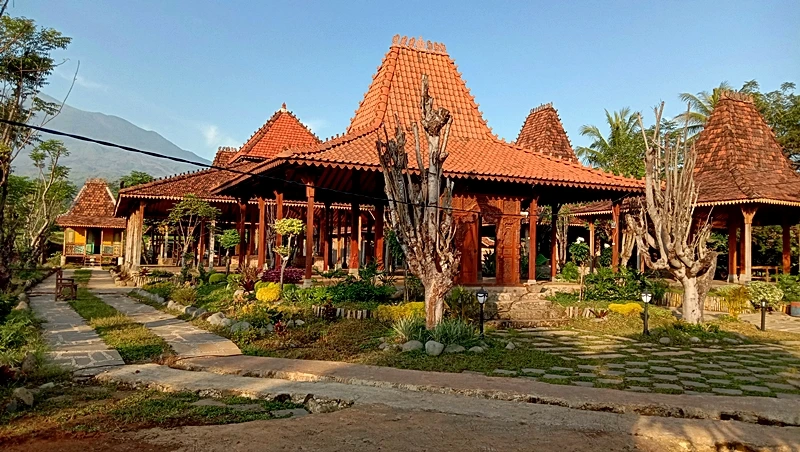
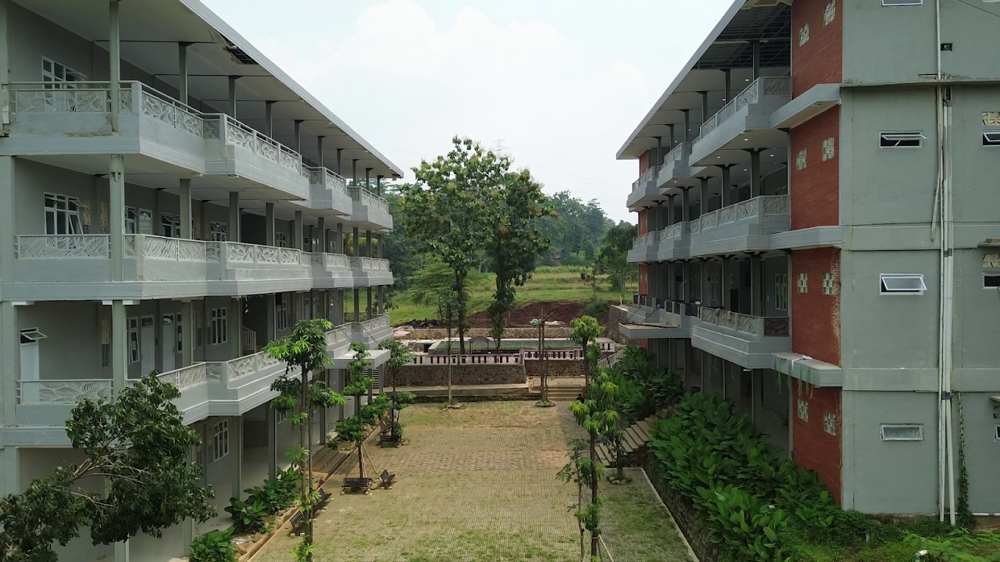

Tentang Diriku
Perkenalan singkat tentang diriku.
Halo! Saya Aufa Rizaldy Syauqillah, seorang pelajar yang memiliki ketertarikan pada dunia sastra, bahasa Inggris, dan pengembangan diri. Saya senang membaca novel, menulis puisi maupun cerpen, serta terus mengembangkan kemampuan komunikasi melalui berbagai kegiatan akademik dan organisasi.
Saya percaya bahwa proses belajar yang konsisten akan membentuk karakter, kreativitas, dan kemampuan untuk memberikan manfaat bagi orang lain.
Timeline Pendidikan
Perjalanan pendidikanku.
-

SD
SDN 3 Margadadi Indramayu
-

SMP
SMP IT Bina Insan Mulia Cirebon
-

SMA
MAS Unggulan Bertaraf Internasional Bina Insan Mulia Cirebon
Keahlian
Kombinasi kemampuan teknis dan interpersonal yang terus kukembangkan.
Hard Skills
- Creative Writing
- English Speaking
- Public Speaking
- Literature
- Drawing & Illustration
Soft Skills
- Leadership
- Teamwork
- Problem Solving
- Continuous Learning
- Time Management
Prestasi
Beberapa prestasi yang telah diraih dalam perjalanan pendidikan dan pengalamanku.
-
Juara 1 Lomba Monologue
Meraih juara 1 dalam lomba monologue yang diselenggarakan oleh OSIP (Organisasi Santri Intra Pesantren) Bina Insan Mulia Cirebon tahun 2026.
-
Juara 3 Seni Sastra Lomba Cipta Puisi
Meraih juara 3 dalam lomba cipta puisi yang diselenggarakan oleh AUO (Aloka Unnati Organizer) dalam rangka memperingati Hari Guru Nasional tahun 2026.
Lihat Sertifikat -
Juara 2 Seni Sastra Lomba Cipta Cerpen
Meraih juara 2 dalam lomba cipta cerpen yang diselenggarakan oleh AUO (Aloka Unnati Organizer) dalam rangka memperingati Hari Pahlawan Nasional tahun 2026.
Lihat Sertifikat -
Tahfidz Al-Quran 7 Juz
Telah menyelesaikan program Tahfidz 7 juz Al-Quran dengan predikat Jayyid Jiddan Pondok Pesantren Bina Insan Mulia Cirebon tahun 2023.
Lihat Sertifikat
Pengalaman
Beberapa pengalaman dan organisasi yang telah kujalani.
-
World Muslim Scout Jamboree
Menjadi bagian dari delegasi Pondok Pesantren Bina Insan Mulia dalam kegiatan World Muslim Scout Jamboree sebagai ajang pertukaran budaya, kepemimpinan, dan persaudaraan pramuka tingkat internasional pada tahun 2025.
-
Best Speech English
Meraih predikat Best Speech pada program English Weekly Meeting sebagai bentuk apresiasi atas kemampuan public speaking dalam bahasa Inggris.
Motto Hidup
“Don't just be the best, but always strive to be better.”